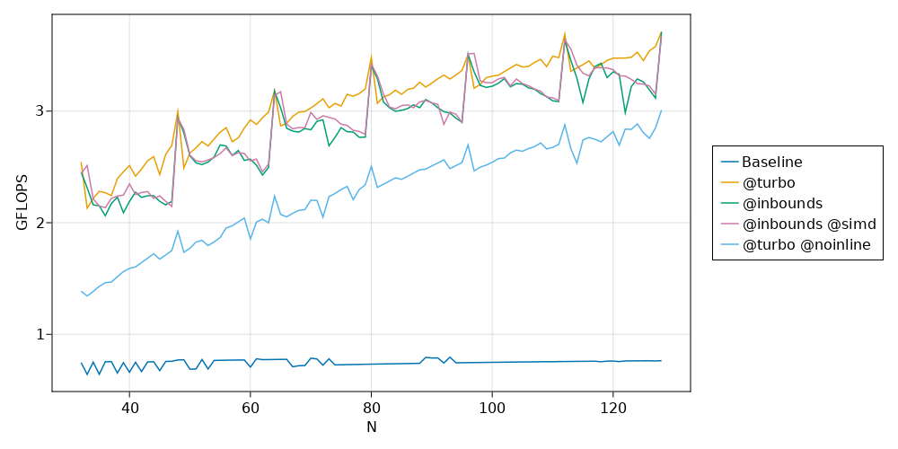

Posts tagged julia
Basic SIMD in Julia
- 2021-08-20
This post summarizes what I’ve learned from a few places on the web (mostly Wikipedia and this thread on the Julia Discourse). I am indebted to countless people in the open-source community and Chris Elrod’s posts in that thread are a stand-out example.
SIMD (single instruction, multiple data) is a cool feature of modern CPUs that allows more than one value to be operated on in a single instruction. This is sort of “closer to the metal” than traditional parallel processing techniques (multiprocessing, multithreading) in that the OS doesn’t have a role in making it happen – it’s just a special type of CPU instruction. As a simple example, a CPU capable of 64-bit SIMD could load two 32-bit ints at once and apply some operation to both of them, instead of loading and operating on them one at a time.
